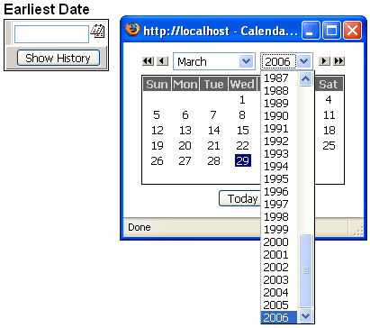

Keeping a Calendar Control Current
When you place a Date Picker (popup calendar) control on a grid or dialog component, there are several properties that you can set.
Date format
Low year
High year
There are applications where you would want to limit the range of years shown on the control. You might also want to dynamically change the date format, depending on the preferences of the web user.
This example shows the override section of the dlg_hdate dialog component after the designer placed it on an A5W page. The date picker was the first control on the page (hence with Variable_Info[1] ).
with tmpl_dlg_hdate with Variable_Info[1]
.DatePicker.DateFormat = "mm/dd/yyyy"
.DatePicker.HighYear = cyear(date()) end with componentName = "dlg_hdate" end with |
Note how the .DatePicker.HighYear property will always be set to the current year (in this case, 2006). There will be no need for future maintenance.

See Also